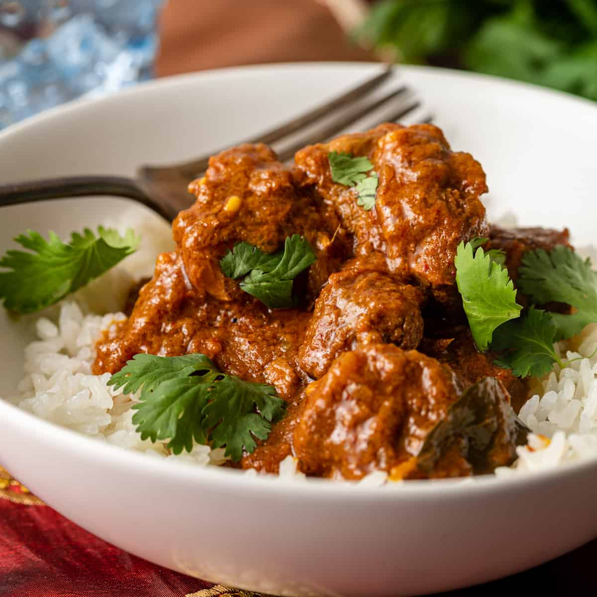

Home
Vindaloo

Description
Vindaloo is a fiery, flavorful Indian curry with roots in Portuguese culture, brought to Goa and transformed with bold spices and local ingredients. Traditionally made with pork, modern versions often use chicken, lamb, or beef, marinated in vinegar, garlic, and a blend of chili, cumin, and coriander for a deep, tangy heat.
Often served with steamed basmati rice or warm naan bread, vindaloo is perfect for spice lovers seeking a satisfying, hearty meal. Its distinctive balance of acidity and heat makes it stand out among Indian curries, offering a warming experience that's as bold as it is delicious.
Ingredients
- 1.5 meat of your choice (pork, chicken, lamb, or beef), cut into cubes
- 3 tablespoons white vinegar
- 1 tablespoon lemon juice
- 1 tablespoon ground cumin
- 1 tablespoon ground coriander
- 1 tablespoon paprika
- 1 teaspoon cayenne pepper
- 1 teaspoon ground turmeric
- 1 tablespoon garam masala
- 1 teaspoon salt
- 4-6 garlic cloves, minced
- 1 inch piece fresh ginger, grated
- 2 tablespoons ghee
- 1 large onion, finely chopped
- 1-2 dried red chilies
- 1 cup water or stock
- 1 teaspoon sugar
Steps
- Marinate the meat. In a large bowl, combine the meat with the vinegar, lemon juice, garlic, ginger, and all of the ground spices. Mix well, cover, and let it marinate in the fridge for at least 1 hour, but ideally overnight.
- Saute the onions. Heat the ghee in a large pan over medium heat. Add the chopped onions and cook until golden brown, about 10-15 minutes. This adds sweetness and depth to balance the acidity.
- Add the marinated meat to the pan. Sear for 5-7 minutes, stirring occasionally, until the meat is browned on all sides.
- Simmer. Add 1 cup of water and bring to a boil. Lower the heat and simmer uncovered for 45 minutes to 1 hour, or until the meat is tender and the sauce has thickened. Stir occasionally and add more water if it gets too dry.
- Adjust and finish. Stir in 1 teaspoon of sugar to balance the flavors. Taste and adjust salt or spice levels as needed.
- Serve. Enjoy with basmati rice and naan.